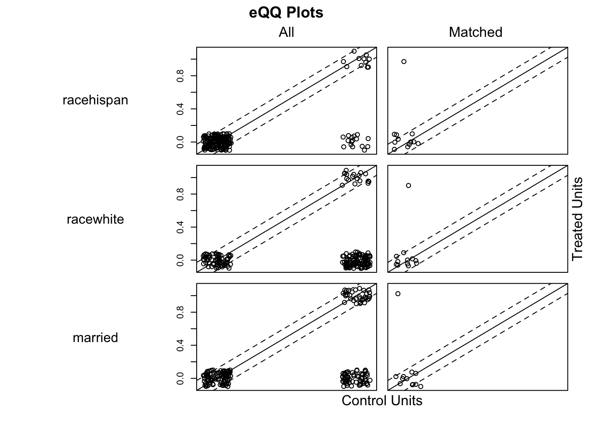
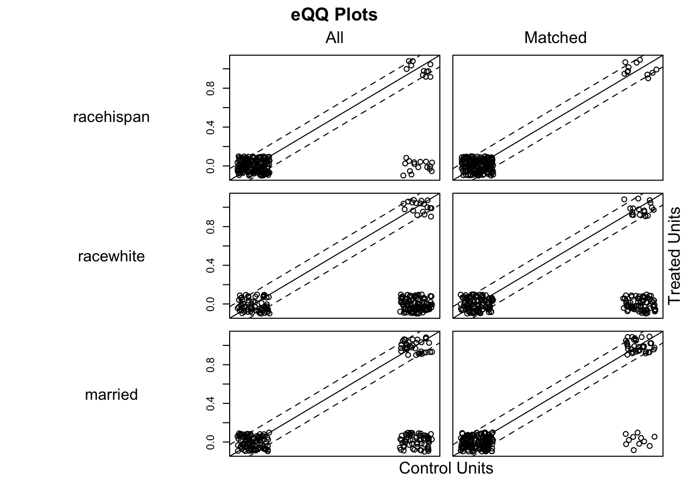
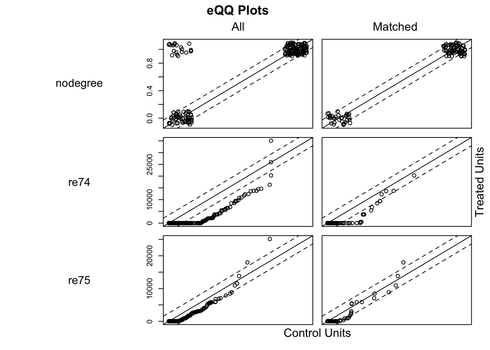
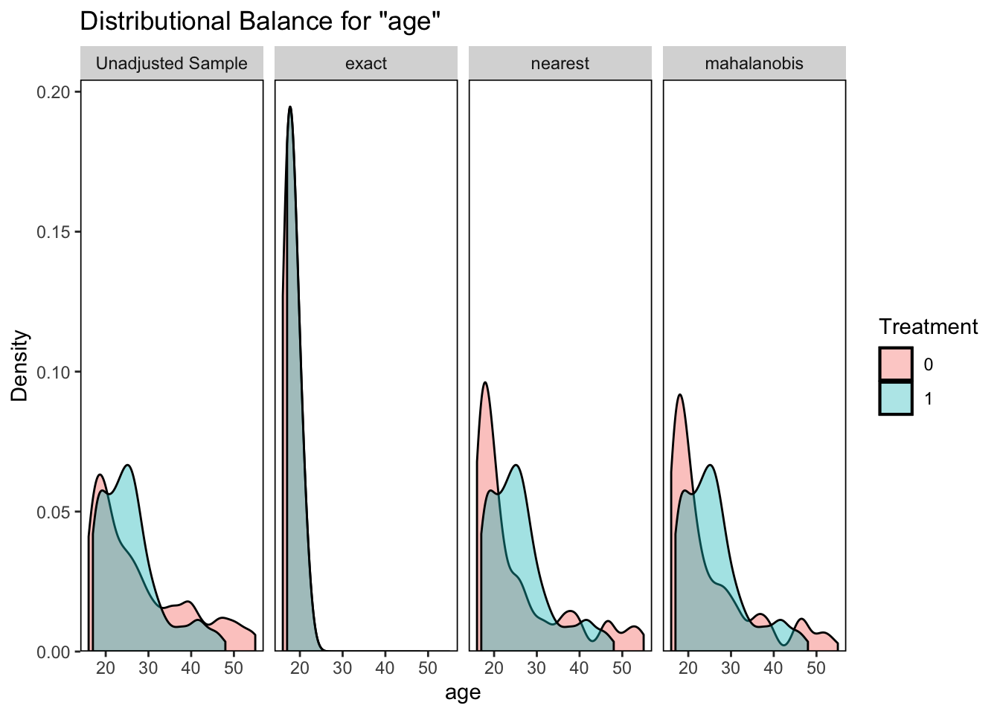

flowchart LR T(T) --> Y(Y) X(X) --> Y(Y)
6 Мэтчинг
6.1 Теория
Ранее, когда мы обсуждали рандомизированные эксперименты, где воздействие является случайным (экзогенным), мы говорили, что контрольные переменные (covariates) можно не включать, поскольку их пропуск не вызывал смещения. Мы включали их только тогда, когда хотели снизить дисперисю оценки. Схема такой ситуации на рисунке ниже.
Теперь мы столкнулись с ситуацией, отличной от эксперимента. Наш тритмент больше не является случайным, а контрольные переменные (confounders) мы будем использовать для того, чтобы избавиться от смещения.
flowchart LR T(T) --> Y(Y) X(X) -->|1| Y(Y) X(X) -->|2| T(T)
На такой икс контролировать обязательно, поскольку в противном случае он создает смещение выборки. К тому же в данной ситуации нельзя просто сравнить средние, нужно как-то убрать лишние стрелочки (см. рисунок выше):
\(Y \sim T + X\) – чтобы убрать первую стрелку, нужно построить полную и правильно специфицированную модель Y. Часто это бывает очень сложно. Эквивалентной процедурой будет сначала оценить модель только на X, а потом посмотреть на эффект на остатках.Также это эквивалентно оценке \(ATE = \frac{1}{n_T}\sum_{T=1}[Y-m(X)]-\frac{1}{n_C}\sum_{T=0}[Y-m(X)]\), где \(m(X) = \mathbb{E}(Y|X)\).
\(T \sim X\) – гораздо проще построить модель назначения воздействия. Иногда мы знаем точный гайдлайн, по которому формируется группа воздействия, например, разные должностные инструкции или дугие официальные критерии. А иногда мы можем просто догадаться. В любом случае это проще, чем построение общей модели зависимой переменной.
Предсказанные значения вероятности \(\widehat{T}\) называются propensity score (мера склонности). Они используются для расчета весов \(w = \frac{T}{e(X)} + \frac{1-T}{1-e(X)}\), которые входят в оценку эффекта. Используя эти веса строится оценка вида \(\widehat{ATE}=\frac{1}{N_T} \sum_{T=1} \frac{1}{e(X)} Y-\frac{1}{N_C} \sum_{T=0} \frac{1}{1-e(X)} Y\). Аналогично можно оценить обычную регрессию, где в качестве зависимой переменной выступает \(wY\).
Предпосылками к оценке являются:
- \(T_i \perp\left(Y(1)_i, Y(0)_i\right) \mid X_i\) – unconfoundedness (CIA, conditional independence assumption). Если взять людей с одинаковыми характеристиками, то факт, что они в такой-то группе, не зависит от потенциальных исходов. Фактически, если мы фиксируем икс, то получаем идеальный эксперимент. Мы говорили, что есть иксы, которые вызывают смещение, потому что “смешивают” внтури нашей выборки разные группы, так вот если мы этот икс фиксируем, “размешивая” наши данные обратно, то внутри каждой группы мы получаем идеальный эксперимент. Невыполнение этой предпосылки ведёт к смещению оценок.
- \(e\left(X_i\right)=E\left(T_i \mid X_i\right) \in(0,1)\) – overlap. Вероятность попадания в тритмент группу зависит от характеристик и ненулевая для всех значений X. Это важно для нас потому, что для propesity score, равному нулю мы не найдем контрольную группу, а наблюдения с propesity score, равным единице совершенно точно имели назначение тритмента, то есть это тоже какие-то странные наблюдения, эффект на которых явно отличается. Невыполнение этой предпосылки ведет к тому, что мы просто физически не сможем посчитать эффект, потому что второе слагаемое в разности средних просто не будет существовать.
6.2 Пример
База данных, впервые использованная в работе LaLonde (1986), представляет собой классический массив данных, используемый в качестве тестового во многих методологических работах, посвященных мэтчингу. Исследуется вопрос о воздействии программ повышения квалификации (переобучения безработных) на доход.
Это подвыборка данных из совокупности, подвергшейся воздействию в рамках программы National Supported Work Demonstration (NSW) и выборки для сопоставления из текущего обследования населения (Current Population Survey, CPS). Эти данные были использованы в исследованиях Lalonde (1986), Dehejia and Wahba (1999).
library('MatchIt')data('lalonde')
head(lalonde) treat age educ race married nodegree re74 re75 re78
NSW1 1 37 11 black 1 1 0 0 9930.0460
NSW2 1 22 9 hispan 0 1 0 0 3595.8940
NSW3 1 30 12 black 0 0 0 0 24909.4500
NSW4 1 27 11 black 0 1 0 0 7506.1460
NSW5 1 33 8 black 0 1 0 0 289.7899
NSW6 1 22 9 black 0 1 0 0 4056.4940Данные состоят из 614 наблюдений (185 в тритменте, 429 в контроле):
- treat – назначение тритмента (1 – участвовал в программе, 0 – не участвовал)
- age – возраст в годах
- educ – количество лет образования
- race – этническая принадлежность человека (Black, Hispanic, or White)
- married – семейный статус (1 – в браке, 0 – холост).
- nodegree – индикатор того, имеет ли человек высшее образование (1 – нет высшего образования, 0 – есть высшее образование)
- re74 – доход в 1974 году в долларах США.
- re75 – доход в 1975 году в долларах США.
- re78 – доход в 1978 году в долларах США.
6.2.1 Баланс ковариатов ДО мэтчинга
Основная проблема в случае, когда тритмент является эндогенным, это смещение выборки. С высокой долей вероятности наблюдения в двух группах будут неплохожими друг на друга, то есть предпосылка об экзогенности \(T_i \perp Y(1)_i, Y(0)_i, X_i\) не будет выполнена.
Мы можем это проверить на данных, используя тот же инструмент, который мы использовали при проверки качества рандомизации – баланс ковариатов. Фактически это сравнение средних значений контрольных переменных в двух группах. Если воздействие было случайным, то средние в двух группах должны быть примерно равны.
Проверим это для наших данных, используя разные пакеты.
6.2.1.1 t-тест – p-value
\(H_0:\) среднее значение параметра в группах одинаковое, группы не различаются.
Если мы получили достаточно большое значение t-статистики такое, что \(p-value < \alpha\), то мы отклоняем нулевую гипотезу и заключаем, что группы статистически различаются по переменной интереса.
library('tableone')table1 <- CreateTableOne(vars=c('age', 'educ', 'race', 'married', 'nodegree', 're74', 're75'),
strata = 'treat', data=lalonde, test=TRUE)
table1 Stratified by treat
0 1 p test
n 429 185
age (mean (SD)) 28.03 (10.79) 25.82 (7.16) 0.011
educ (mean (SD)) 10.24 (2.86) 10.35 (2.01) 0.633
race (%) <0.001
black 87 (20.3) 156 (84.3)
hispan 61 (14.2) 11 ( 5.9)
white 281 (65.5) 18 ( 9.7)
married (mean (SD)) 0.51 (0.50) 0.19 (0.39) <0.001
nodegree (mean (SD)) 0.60 (0.49) 0.71 (0.46) 0.009
re74 (mean (SD)) 5619.24 (6788.75) 2095.57 (4886.62) <0.001
re75 (mean (SD)) 2466.48 (3292.00) 1532.06 (3219.25) 0.001 Видим, что баланс ковариант есть только по переменной education.
6.2.1.2 Хи-квадрат тест – сводит к одной статистике
library('RItools')xBalance(treat ~ age + educ + race + married + nodegree + re74 + re75,
data=lalonde, report = 'chisquare.test')---Overall Test---
chisquare df p.value
unstrat 238 8 6.17e-47Если статистика >25, то нет баланса. У нас 238, поэтому баланса точно нет.
6.2.1.3 t-тест – std diff
mod1 <- matchit(treat ~ age + educ + race + married + nodegree + re74 + re75,
data = lalonde, method = NULL, distance = 'glm')
summary(mod1)
Call:
matchit(formula = treat ~ age + educ + race + married + nodegree +
re74 + re75, data = lalonde, method = NULL, distance = "glm")
Summary of Balance for All Data:
Means Treated Means Control Std. Mean Diff. Var. Ratio eCDF Mean
distance 0.5774 0.1822 1.7941 0.9211 0.3774
age 25.8162 28.0303 -0.3094 0.4400 0.0813
educ 10.3459 10.2354 0.0550 0.4959 0.0347
raceblack 0.8432 0.2028 1.7615 . 0.6404
racehispan 0.0595 0.1422 -0.3498 . 0.0827
racewhite 0.0973 0.6550 -1.8819 . 0.5577
married 0.1892 0.5128 -0.8263 . 0.3236
nodegree 0.7081 0.5967 0.2450 . 0.1114
re74 2095.5737 5619.2365 -0.7211 0.5181 0.2248
re75 1532.0553 2466.4844 -0.2903 0.9563 0.1342
eCDF Max
distance 0.6444
age 0.1577
educ 0.1114
raceblack 0.6404
racehispan 0.0827
racewhite 0.5577
married 0.3236
nodegree 0.1114
re74 0.4470
re75 0.2876
Sample Sizes:
Control Treated
All 429 185
Matched 429 185
Unmatched 0 0
Discarded 0 06.2.1.4 t-тест, выдача в формате true/false
library('cobalt')bal.tab(treat ~ age + educ + race + married + nodegree + re74 + re75,
data = lalonde, estimand = 'ATE', m.threshold = 0.05)Balance Measures
Type Diff.Un M.Threshold.Un
age Contin. -0.2419 Not Balanced, >0.05
educ Contin. 0.0448 Balanced, <0.05
race_black Binary 0.6404 Not Balanced, >0.05
race_hispan Binary -0.0827 Not Balanced, >0.05
race_white Binary -0.5577 Not Balanced, >0.05
married Binary -0.3236 Not Balanced, >0.05
nodegree Binary 0.1114 Not Balanced, >0.05
re74 Contin. -0.5958 Not Balanced, >0.05
re75 Contin. -0.2870 Not Balanced, >0.05
Balance tally for mean differences
count
Balanced, <0.05 1
Not Balanced, >0.05 8
Variable with the greatest mean difference
Variable Diff.Un M.Threshold.Un
race_black 0.6404 Not Balanced, >0.05
Sample sizes
Control Treated
All 429 185Баланс есть только по образованию, а вот самый большой дисбаланс по расе – в тритмент группе преобладают темнокожие.
6.2.1.5 dplyr – наше всё
library('dplyr')balance1 <- lalonde %>% group_by(treat) %>% summarise(avgeduc = mean(educ))
balance1# A tibble: 2 × 2
treat avgeduc
<int> <dbl>
1 0 10.2
2 1 10.3balance2 <- lalonde %>% group_by(treat) %>% summarize_all(mean)
balance2# A tibble: 2 × 9
treat age educ race married nodegree re74 re75 re78
<int> <dbl> <dbl> <dbl> <dbl> <dbl> <dbl> <dbl> <dbl>
1 0 28.0 10.2 NA 0.513 0.597 5619. 2466. 6984.
2 1 25.8 10.3 NA 0.189 0.708 2096. 1532. 6349.6.2.1.6 Гистограмы
lalonde$ftreat <- as.factor(lalonde$treat)Во-первых, посмотрим, как изменился доход после участия в программе переобучения:
ggplot(lalonde, aes(x=re74, fill=ftreat, color=ftreat)) +
geom_histogram(position="identity", alpha=0.7)
ggplot(lalonde, aes(x=re78, fill=ftreat, color=ftreat)) +
geom_histogram(position="identity", alpha=0.7)Баланс по возрасту отсутствует:
ggplot(lalonde, aes(x=age, fill=ftreat, color=ftreat)) +
geom_histogram(position="identity", alpha=0.7)Баланс по образованию тоже отсутствует:
ggplot(lalonde, aes(x=educ, fill=ftreat, color=ftreat)) +
geom_histogram(position="identity", alpha=0.7)
6.2.1.7 Пакеты с красивыми описательными статистиками
6.2.1.7.1 Пакет psych
library('psych')psych::describeBy(lalonde, lalonde$treat)
Descriptive statistics by group
group: 0
vars n mean sd median trimmed mad min max range
treat 1 429 0.00 0.00 0.00 0.00 0.00 0 0.00 0.00
age 2 429 28.03 10.79 25.00 26.72 10.38 16 55.00 39.00
educ 3 429 10.24 2.86 11.00 10.39 1.48 0 18.00 18.00
race* 4 429 2.45 0.81 3.00 2.56 0.00 1 3.00 2.00
married 5 429 0.51 0.50 1.00 0.52 0.00 0 1.00 1.00
nodegree 6 429 0.60 0.49 1.00 0.62 0.00 0 1.00 1.00
re74 7 429 5619.24 6788.75 2547.05 4453.19 3776.25 0 25862.32 25862.32
re75 8 429 2466.48 3292.00 1086.73 1830.87 1611.18 0 18347.23 18347.23
re78 9 429 6984.17 7294.16 4975.50 5968.08 7376.68 0 25564.67 25564.67
ftreat* 10 429 1.00 0.00 1.00 1.00 0.00 1 1.00 0.00
skew kurtosis se
treat NaN NaN 0.00
age 0.88 -0.34 0.52
educ -0.68 1.26 0.14
race* -0.99 -0.75 0.04
married -0.05 -2.00 0.02
nodegree -0.39 -1.85 0.02
re74 1.22 0.57 327.76
re75 1.77 3.34 158.94
re78 0.94 -0.14 352.17
ftreat* NaN NaN 0.00
------------------------------------------------------------
group: 1
vars n mean sd median trimmed mad min max range
treat 1 185 1.00 0.00 1.00 1.00 0.00 1 1.00 0.00
age 2 185 25.82 7.16 25.00 24.85 5.93 17 48.00 31.00
educ 3 185 10.35 2.01 11.00 10.46 1.48 4 16.00 12.00
race* 4 185 1.25 0.62 1.00 1.07 0.00 1 3.00 2.00
married 5 185 0.19 0.39 0.00 0.11 0.00 0 1.00 1.00
nodegree 6 185 0.71 0.46 1.00 0.76 0.00 0 1.00 1.00
re74 7 185 2095.57 4886.62 0.00 834.42 0.00 0 35040.07 35040.07
re75 8 185 1532.06 3219.25 0.00 790.16 0.00 0 25142.24 25142.24
re78 9 185 6349.14 7867.40 4232.31 4976.95 6274.82 0 60307.93 60307.93
ftreat* 10 185 2.00 0.00 2.00 2.00 0.00 2 2.00 0.00
skew kurtosis se
treat NaN NaN 0.00
age 1.11 0.81 0.53
educ -0.72 1.39 0.15
race* 2.20 3.21 0.05
married 1.57 0.48 0.03
nodegree -0.91 -1.18 0.03
re74 3.36 14.20 359.27
re75 3.75 19.03 236.68
re78 2.70 12.28 578.42
ftreat* NaN NaN 0.006.2.1.7.2 Пакет skimr
library('skimr')skim(lalonde)| Name | lalonde |
| Number of rows | 614 |
| Number of columns | 10 |
| _______________________ | |
| Column type frequency: | |
| factor | 2 |
| numeric | 8 |
| ________________________ | |
| Group variables | None |
Variable type: factor
| skim_variable | n_missing | complete_rate | ordered | n_unique | top_counts |
|---|---|---|---|---|---|
| race | 0 | 1 | FALSE | 3 | whi: 299, bla: 243, his: 72 |
| ftreat | 0 | 1 | FALSE | 2 | 0: 429, 1: 185 |
Variable type: numeric
| skim_variable | n_missing | complete_rate | mean | sd | p0 | p25 | p50 | p75 | p100 | hist |
|---|---|---|---|---|---|---|---|---|---|---|
| treat | 0 | 1 | 0.30 | 0.46 | 0 | 0.00 | 0.00 | 1.00 | 1.00 | ▇▁▁▁▃ |
| age | 0 | 1 | 27.36 | 9.88 | 16 | 20.00 | 25.00 | 32.00 | 55.00 | ▇▅▂▂▁ |
| educ | 0 | 1 | 10.27 | 2.63 | 0 | 9.00 | 11.00 | 12.00 | 18.00 | ▁▂▆▇▁ |
| married | 0 | 1 | 0.42 | 0.49 | 0 | 0.00 | 0.00 | 1.00 | 1.00 | ▇▁▁▁▆ |
| nodegree | 0 | 1 | 0.63 | 0.48 | 0 | 0.00 | 1.00 | 1.00 | 1.00 | ▅▁▁▁▇ |
| re74 | 0 | 1 | 4557.55 | 6477.96 | 0 | 0.00 | 1042.33 | 7888.50 | 35040.07 | ▇▂▁▁▁ |
| re75 | 0 | 1 | 2184.94 | 3295.68 | 0 | 0.00 | 601.55 | 3248.99 | 25142.24 | ▇▁▁▁▁ |
| re78 | 0 | 1 | 6792.83 | 7470.73 | 0 | 238.28 | 4759.02 | 10893.59 | 60307.93 | ▇▂▁▁▁ |
lalonde %>% group_by(treat) %>% skim()| Name | Piped data |
| Number of rows | 614 |
| Number of columns | 10 |
| _______________________ | |
| Column type frequency: | |
| factor | 2 |
| numeric | 7 |
| ________________________ | |
| Group variables | treat |
Variable type: factor
| skim_variable | treat | n_missing | complete_rate | ordered | n_unique | top_counts |
|---|---|---|---|---|---|---|
| race | 0 | 0 | 1 | FALSE | 3 | whi: 281, bla: 87, his: 61 |
| race | 1 | 0 | 1 | FALSE | 3 | bla: 156, whi: 18, his: 11 |
| ftreat | 0 | 0 | 1 | FALSE | 1 | 0: 429, 1: 0 |
| ftreat | 1 | 0 | 1 | FALSE | 1 | 1: 185, 0: 0 |
Variable type: numeric
| skim_variable | treat | n_missing | complete_rate | mean | sd | p0 | p25 | p50 | p75 | p100 | hist |
|---|---|---|---|---|---|---|---|---|---|---|---|
| age | 0 | 0 | 1 | 28.03 | 10.79 | 16 | 19.00 | 25.00 | 35.00 | 55.00 | ▇▃▂▂▂ |
| age | 1 | 0 | 1 | 25.82 | 7.16 | 17 | 20.00 | 25.00 | 29.00 | 48.00 | ▇▇▂▁▁ |
| educ | 0 | 0 | 1 | 10.24 | 2.86 | 0 | 9.00 | 11.00 | 12.00 | 18.00 | ▁▂▆▇▁ |
| educ | 1 | 0 | 1 | 10.35 | 2.01 | 4 | 9.00 | 11.00 | 12.00 | 16.00 | ▁▂▇▃▁ |
| married | 0 | 0 | 1 | 0.51 | 0.50 | 0 | 0.00 | 1.00 | 1.00 | 1.00 | ▇▁▁▁▇ |
| married | 1 | 0 | 1 | 0.19 | 0.39 | 0 | 0.00 | 0.00 | 0.00 | 1.00 | ▇▁▁▁▂ |
| nodegree | 0 | 0 | 1 | 0.60 | 0.49 | 0 | 0.00 | 1.00 | 1.00 | 1.00 | ▆▁▁▁▇ |
| nodegree | 1 | 0 | 1 | 0.71 | 0.46 | 0 | 0.00 | 1.00 | 1.00 | 1.00 | ▃▁▁▁▇ |
| re74 | 0 | 0 | 1 | 5619.24 | 6788.75 | 0 | 0.00 | 2547.05 | 9277.13 | 25862.32 | ▇▂▂▁▁ |
| re74 | 1 | 0 | 1 | 2095.57 | 4886.62 | 0 | 0.00 | 0.00 | 1291.47 | 35040.07 | ▇▁▁▁▁ |
| re75 | 0 | 0 | 1 | 2466.48 | 3292.00 | 0 | 0.00 | 1086.73 | 3881.42 | 18347.23 | ▇▂▁▁▁ |
| re75 | 1 | 0 | 1 | 1532.06 | 3219.25 | 0 | 0.00 | 0.00 | 1817.28 | 25142.24 | ▇▁▁▁▁ |
| re78 | 0 | 0 | 1 | 6984.17 | 7294.16 | 0 | 220.18 | 4975.50 | 11688.82 | 25564.67 | ▇▃▂▂▁ |
| re78 | 1 | 0 | 1 | 6349.14 | 7867.40 | 0 | 485.23 | 4232.31 | 9643.00 | 60307.93 | ▇▁▁▁▁ |
6.2.1.7.3 Пакет summarytools
library('summarytools')dfSummary(lalonde)Data Frame Summary
lalonde
Dimensions: 614 x 10
Duplicates: 5
-----------------------------------------------------------------------------------------------------------
No Variable Stats / Values Freqs (% of Valid) Graph Valid Missing
---- ----------- ----------------------------- --------------------- ----------------- ---------- ---------
1 treat Min : 0 0 : 429 (69.9%) IIIIIIIIIIIII 614 0
[integer] Mean : 0.3 1 : 185 (30.1%) IIIIII (100.0%) (0.0%)
Max : 1
2 age Mean (sd) : 27.4 (9.9) 40 distinct values : 614 0
[integer] min < med < max: : : (100.0%) (0.0%)
16 < 25 < 55 : : .
IQR (CV) : 12 (0.4) : : : . .
: : : : : : : .
3 educ Mean (sd) : 10.3 (2.6) 19 distinct values : 614 0
[integer] min < med < max: : (100.0%) (0.0%)
0 < 11 < 18 : :
IQR (CV) : 3 (0.3) : : :
. . : : : : .
4 race 1. black 243 (39.6%) IIIIIII 614 0
[factor] 2. hispan 72 (11.7%) II (100.0%) (0.0%)
3. white 299 (48.7%) IIIIIIIII
5 married Min : 0 0 : 359 (58.5%) IIIIIIIIIII 614 0
[integer] Mean : 0.4 1 : 255 (41.5%) IIIIIIII (100.0%) (0.0%)
Max : 1
6 nodegree Min : 0 0 : 227 (37.0%) IIIIIII 614 0
[integer] Mean : 0.6 1 : 387 (63.0%) IIIIIIIIIIII (100.0%) (0.0%)
Max : 1
7 re74 Mean (sd) : 4557.5 (6478) 358 distinct values : 614 0
[numeric] min < med < max: : (100.0%) (0.0%)
0 < 1042.3 < 35040.1 :
IQR (CV) : 7888.5 (1.4) :
: : . .
8 re75 Mean (sd) : 2184.9 (3295.7) 356 distinct values : 614 0
[numeric] min < med < max: : (100.0%) (0.0%)
0 < 601.5 < 25142.2 :
IQR (CV) : 3249 (1.5) :
: : .
9 re78 Mean (sd) : 6792.8 (7470.7) 457 distinct values : 614 0
[numeric] min < med < max: : (100.0%) (0.0%)
0 < 4759 < 60307.9 :
IQR (CV) : 10655.3 (1.1) : :
: : : . .
10 ftreat 1. 0 429 (69.9%) IIIIIIIIIIIII 614 0
[factor] 2. 1 185 (30.1%) IIIIII (100.0%) (0.0%)
-----------------------------------------------------------------------------------------------------------6.2.2 Оценка меры склонности
Мы убедились, что баланса в контрольной группе и группе воздействия нет, как и пологается при энлогенном тритменте. Далее будем строить оценку воздействия с помощью мэтчинга.
6.2.2.1 Вручную
Чтобы построить прогнозное значение вероятности попадания каждого наблюдения в группу воздействия, оценим простейшую логит модель:
propscore <- glm(treat ~ age + educ + race + married + nodegree + re74 + re75,
data = lalonde, family = binomial(link='logit'))
summary(propscore)
Call:
glm(formula = treat ~ age + educ + race + married + nodegree +
re74 + re75, family = binomial(link = "logit"), data = lalonde)
Deviance Residuals:
Min 1Q Median 3Q Max
-1.7645 -0.4736 -0.2862 0.7508 2.7169
Coefficients:
Estimate Std. Error z value Pr(>|z|)
(Intercept) -1.663e+00 9.709e-01 -1.713 0.08668 .
age 1.578e-02 1.358e-02 1.162 0.24521
educ 1.613e-01 6.513e-02 2.477 0.01325 *
racehispan -2.082e+00 3.672e-01 -5.669 1.44e-08 ***
racewhite -3.065e+00 2.865e-01 -10.699 < 2e-16 ***
married -8.321e-01 2.903e-01 -2.866 0.00415 **
nodegree 7.073e-01 3.377e-01 2.095 0.03620 *
re74 -7.178e-05 2.875e-05 -2.497 0.01253 *
re75 5.345e-05 4.635e-05 1.153 0.24884
---
Signif. codes: 0 '***' 0.001 '**' 0.01 '*' 0.05 '.' 0.1 ' ' 1
(Dispersion parameter for binomial family taken to be 1)
Null deviance: 751.49 on 613 degrees of freedom
Residual deviance: 487.84 on 605 degrees of freedom
AIC: 505.84
Number of Fisher Scoring iterations: 5Посмотрим на первые 10 вероятностей:
propscore$fitted.values[1:10] NSW1 NSW2 NSW3 NSW4 NSW5 NSW6 NSW7
0.63876993 0.22463424 0.67824388 0.77632408 0.70163874 0.69906990 0.65368426
NSW8 NSW9 NSW10
0.78972311 0.77983825 0.04292461 И на их распределение:
hist(propscore$fitted.values)Посчитаем веса по формуле \(w = \frac{T}{e(X)} + \frac{1-T}{1-e(X)}\):
lalonde$ps_handmade <- propscore$fitted.values # добавили в датасет меру склонности для каждого наблюдения
lalonde <- lalonde %>% mutate(w_ate = treat/ps_handmade + (1-treat)/(1-ps_handmade)) # посчитаем веса6.2.2.2 Через пакет WeightIt
Аналогичные веса можно получить готовыми из пакета WeightIt.
library('WeightIt')Однако помимо самих весов пакет представляет в подарок еще и широкую аналитику по весам в вашей выборке:
propscore1 <- weightit(treat ~ age + educ + race + married + nodegree + re74 + re75,
data = lalonde, estimand = 'ATE', method = 'ps')
summary(propscore1) Summary of weights
- Weight ranges:
Min Max
treated 1.1721 |---------------------------| 40.0773
control 1.0092 |-| 4.7432
- Units with the 5 most extreme weights by group:
68 116 10 137 124
treated 13.5451 15.9884 23.2967 23.3891 40.0773
597 573 381 411 303
control 4.0301 4.0592 4.2397 4.5231 4.7432
- Weight statistics:
Coef of Var MAD Entropy # Zeros
treated 1.478 0.807 0.534 0
control 0.552 0.391 0.118 0
- Effective Sample Sizes:
Control Treated
Unweighted 429. 185.
Weighted 329.01 58.33Также сохраним эти веса в свой набор данных:
lalonde$w_ate_weightit <- propscore1$weights
propscore1$weights[1:10] [1] 1.565509 4.451681 1.474396 1.288122 1.425235 1.430472 1.529791
[8] 1.266267 1.282317 23.2966566.2.3 Оценка ATE
Самый простой способ оценить эффект – оценить обычную парную МНК регрессию, где в качестве зависимой переменной выступает \(wY\).
mod_ATE <- lm(re78 ~ treat, data = lalonde, weights = lalonde$w_ate) # а можно и взять веса из пакета пакет WeightIt
summary(mod_ATE)
Call:
lm(formula = re78 ~ treat, data = lalonde, weights = lalonde$w_ate)
Weighted Residuals:
Min 1Q Median 3Q Max
-42083 -6606 -2284 4979 77674
Coefficients:
Estimate Std. Error t value Pr(>|t|)
(Intercept) 6422.8 397.4 16.161 <2e-16 ***
treat 224.7 577.7 0.389 0.697
---
Signif. codes: 0 '***' 0.001 '**' 0.01 '*' 0.05 '.' 0.1 ' ' 1
Residual standard error: 9864 on 612 degrees of freedom
Multiple R-squared: 0.0002471, Adjusted R-squared: -0.001386
F-statistic: 0.1513 on 1 and 612 DF, p-value: 0.69756.2.4 Оценка ATT
Для оценки воздействия на воздействованных понадобятся иные веса.
6.2.4.1 Веса вручную
lalonde <- lalonde %>% mutate(w_att = treat + (1-treat)*ps_handmade/(1-ps_handmade)) # посчитаем веса6.2.4.2 Веса через пакет WeightIt
propscore2 <- weightit(treat ~ age + educ + race + married + nodegree + re74 + re75,
data = lalonde, estimand = 'ATT', method = 'ps')
summary(propscore2) Summary of weights
- Weight ranges:
Min Max
treated 1.0000 || 1.0000
control 0.0092 |---------------------------| 3.7432
- Units with the 5 most extreme weights by group:
5 4 3 2 1
treated 1 1 1 1 1
597 573 381 411 303
control 3.0301 3.0592 3.2397 3.5231 3.7432
- Weight statistics:
Coef of Var MAD Entropy # Zeros
treated 0.000 0.000 -0.000 0
control 1.818 1.289 1.098 0
- Effective Sample Sizes:
Control Treated
Unweighted 429. 185
Weighted 99.82 185propscore2$weights[1:10] [1] 1 1 1 1 1 1 1 1 1 16.2.4.3 Сам эффект
mod_ATT <- lm(re78 ~ treat, data = lalonde, weights = lalonde$w_att) # а можно и взять веса из пакета пакет WeightIt
summary(mod_ATT)
Call:
lm(formula = re78 ~ treat, data = lalonde, weights = lalonde$w_att)
Weighted Residuals:
Min 1Q Median 3Q Max
-9182 -1938 -326 1792 53959
Coefficients:
Estimate Std. Error t value Pr(>|t|)
(Intercept) 5135.1 401.2 12.799 <2e-16 ***
treat 1214.1 568.9 2.134 0.0332 *
---
Signif. codes: 0 '***' 0.001 '**' 0.01 '*' 0.05 '.' 0.1 ' ' 1
Residual standard error: 5486 on 612 degrees of freedom
Multiple R-squared: 0.007387, Adjusted R-squared: 0.005765
F-statistic: 4.554 on 1 and 612 DF, p-value: 0.033246.2.5 Просто мэтчинг
library('MatchIt')6.2.5.1 Точный мэтчинг
Сначала подбираем мэтчи и считаем веса:
model_0 <- matchit(treat ~ age + educ + race + married + nodegree + re74 + re75,
data = lalonde, method = "exact", estimand = 'ATE')
summary(model_0)
Call:
matchit(formula = treat ~ age + educ + race + married + nodegree +
re74 + re75, data = lalonde, method = "exact", estimand = "ATE")
Summary of Balance for All Data:
Means Treated Means Control Std. Mean Diff. Var. Ratio eCDF Mean
age 25.8162 28.0303 -0.2419 0.4400 0.0813
educ 10.3459 10.2354 0.0448 0.4959 0.0347
raceblack 0.8432 0.2028 1.6708 . 0.6404
racehispan 0.0595 0.1422 -0.2774 . 0.0827
racewhite 0.0973 0.6550 -1.4080 . 0.5577
married 0.1892 0.5128 -0.7208 . 0.3236
nodegree 0.7081 0.5967 0.2355 . 0.1114
re74 2095.5737 5619.2365 -0.5958 0.5181 0.2248
re75 1532.0553 2466.4844 -0.2870 0.9563 0.1342
eCDF Max
age 0.1577
educ 0.1114
raceblack 0.6404
racehispan 0.0827
racewhite 0.5577
married 0.3236
nodegree 0.1114
re74 0.4470
re75 0.2876
Summary of Balance for Matched Data:
Means Treated Means Control Std. Mean Diff. Var. Ratio eCDF Mean
age 18.12 18.12 0 0.9927 0
educ 10.32 10.32 0 0.9927 0
raceblack 1.00 1.00 0 . 0
racehispan 0.00 0.00 0 . 0
racewhite 0.00 0.00 0 . 0
married 0.00 0.00 0 . 0
nodegree 0.80 0.80 0 . 0
re74 0.00 0.00 0 . 0
re75 0.00 0.00 0 . 0
eCDF Max Std. Pair Dist.
age 0 0
educ 0 0
raceblack 0 0
racehispan 0 0
racewhite 0 0
married 0 0
nodegree 0 0
re74 0 0
re75 0 0
Sample Sizes:
Control Treated
All 429. 185.
Matched (ESS) 11.26 12.18
Matched 12. 13.
Unmatched 417. 172.
Discarded 0. 0. Видим, что с помощью точного мэтчинга подобралось лишь 12 пар.
Затем проверяем баланс при данном типе мэтчинга. Белые точки соответсвуют балансу до мэтчинга, черные – после. Видим, что до мэтчинга баланс был выполнен лишь для образования, а после мэтчинга для всех переменных. Однако за этим мы расплатились малым количеством пар, а малое количество наблюдений при усреднении ведёт к высокой дисперсии, то есть из-за широкого доверительного интервала мы можем не заметить даже реально существующий эффект.
plot(summary(model_0))
plot(model_0, type = "qq", interactive = FALSE, wich.xs = c('age', 'married', 're75', 're74', 'educ'))
Считаем эффект и видим, что он незначим.
model_0_t <- lm(re78 ~ treat, data = lalonde, weights = model_0$weights)
summary(model_0_t)
Call:
lm(formula = re78 ~ treat, data = lalonde, weights = model_0$weights)
Weighted Residuals:
Min 1Q Median 3Q Max
-7598 0 0 0 12131
Coefficients:
Estimate Std. Error t value Pr(>|t|)
(Intercept) 6331 1875 3.376 0.0026 **
treat -1132 2600 -0.435 0.6675
---
Signif. codes: 0 '***' 0.001 '**' 0.01 '*' 0.05 '.' 0.1 ' ' 1
Residual standard error: 6496 on 23 degrees of freedom
Multiple R-squared: 0.008168, Adjusted R-squared: -0.03495
F-statistic: 0.1894 on 1 and 23 DF, p-value: 0.66756.2.5.2 Метод ближайшего соседа с расстоянием по мере склонности
По умолчанию, для мэтчинга по методу ближайшего соседа функция matchit() использует логистическую регрессию для оценки индивидуальных вероятностей попадания в группу воздействия. Чтобы изменить метрику, следует применить аргумент distance.
Сопоставление ближайших соседей также известно как жадное сопоставление. Оно включает просмотр тритмент наблюдений и выбор ближайшего наблюдения из контрольной группы для сопоставления. Подход является жадным в том смысле, что каждое сопоставление происходит безотносительно к тому, как будут или были сопоставлены другие пары, и поэтому не направлено на оптимизацию какого-либо критерия общего критерия, кроме минимизации расстояния на конкретном шаге. То есть на каждом отдельном шаге это будет оптимум, однако сумма попарных расстояний может не быть мимнимальной.
Сопоставление ближайших соседей также требудет указания метрики расстояния. По умолчаниюиспользуется разница в мере склонности. Еще одно популярное расстояние — расстояние Махаланобиса. Пакет при подборе пар по умолчанию начинает с наблюдений с наибольшей мерой склоннсти и дальше действует по убыванию. Это позволит первыми сопоставить те наблюдения, которым будет труднее всего найти пару. Однако возможны и другие упорядочивания (случайные, с возвращениями и т.д.)
model_1 <- matchit(treat ~ age + educ + race + married + nodegree + re74 + re75,
data = lalonde, method = 'nearest', estimand = 'ATT')
summary(model_1)
Call:
matchit(formula = treat ~ age + educ + race + married + nodegree +
re74 + re75, data = lalonde, method = "nearest", estimand = "ATT")
Summary of Balance for All Data:
Means Treated Means Control Std. Mean Diff. Var. Ratio eCDF Mean
distance 0.5774 0.1822 1.7941 0.9211 0.3774
age 25.8162 28.0303 -0.3094 0.4400 0.0813
educ 10.3459 10.2354 0.0550 0.4959 0.0347
raceblack 0.8432 0.2028 1.7615 . 0.6404
racehispan 0.0595 0.1422 -0.3498 . 0.0827
racewhite 0.0973 0.6550 -1.8819 . 0.5577
married 0.1892 0.5128 -0.8263 . 0.3236
nodegree 0.7081 0.5967 0.2450 . 0.1114
re74 2095.5737 5619.2365 -0.7211 0.5181 0.2248
re75 1532.0553 2466.4844 -0.2903 0.9563 0.1342
eCDF Max
distance 0.6444
age 0.1577
educ 0.1114
raceblack 0.6404
racehispan 0.0827
racewhite 0.5577
married 0.3236
nodegree 0.1114
re74 0.4470
re75 0.2876
Summary of Balance for Matched Data:
Means Treated Means Control Std. Mean Diff. Var. Ratio eCDF Mean
distance 0.5774 0.3629 0.9739 0.7566 0.1321
age 25.8162 25.3027 0.0718 0.4568 0.0847
educ 10.3459 10.6054 -0.1290 0.5721 0.0239
raceblack 0.8432 0.4703 1.0259 . 0.3730
racehispan 0.0595 0.2162 -0.6629 . 0.1568
racewhite 0.0973 0.3135 -0.7296 . 0.2162
married 0.1892 0.2108 -0.0552 . 0.0216
nodegree 0.7081 0.6378 0.1546 . 0.0703
re74 2095.5737 2342.1076 -0.0505 1.3289 0.0469
re75 1532.0553 1614.7451 -0.0257 1.4956 0.0452
eCDF Max Std. Pair Dist.
distance 0.4216 0.9740
age 0.2541 1.3938
educ 0.0757 1.2474
raceblack 0.3730 1.0259
racehispan 0.1568 1.0743
racewhite 0.2162 0.8390
married 0.0216 0.8281
nodegree 0.0703 1.0106
re74 0.2757 0.7965
re75 0.2054 0.7381
Sample Sizes:
Control Treated
All 429 185
Matched 185 185
Unmatched 244 0
Discarded 0 0plot(model_1, type = 'jitter', interactive = FALSE) # расположение наблюдений по propscoreplot(summary(model_1))
plot(model_1, type = "qq", interactive = FALSE, wich.xs = c('age', 'married', 're75', 're74', 'educ'))model_1_t <- lm(re78 ~ treat, data = lalonde, weights = model_1$weights)
summary(model_1_t)
Call:
lm(formula = re78 ~ treat, data = lalonde, weights = model_1$weights)
Weighted Residuals:
Min 1Q Median 3Q Max
-6349 -3734 0 0 53959
Coefficients:
Estimate Std. Error t value Pr(>|t|)
(Intercept) 5454.8 516.4 10.563 <2e-16 ***
treat 894.4 730.3 1.225 0.221
---
Signif. codes: 0 '***' 0.001 '**' 0.01 '*' 0.05 '.' 0.1 ' ' 1
Residual standard error: 7024 on 368 degrees of freedom
Multiple R-squared: 0.004059, Adjusted R-squared: 0.001353
F-statistic: 1.5 on 1 and 368 DF, p-value: 0.22156.2.5.3 Метод ближайшего соседа c расстоянием Махаланобиса
model_2 <- matchit(treat ~ age + educ + race + married + nodegree + re74 + re75,
data = lalonde, method = 'nearest', distance = 'mahalanobis', estimand = 'ATT')
summary(model_2)
Call:
matchit(formula = treat ~ age + educ + race + married + nodegree +
re74 + re75, data = lalonde, method = "nearest", distance = "mahalanobis",
estimand = "ATT")
Summary of Balance for All Data:
Means Treated Means Control Std. Mean Diff. Var. Ratio eCDF Mean
age 25.8162 28.0303 -0.3094 0.4400 0.0813
educ 10.3459 10.2354 0.0550 0.4959 0.0347
raceblack 0.8432 0.2028 1.7615 . 0.6404
racehispan 0.0595 0.1422 -0.3498 . 0.0827
racewhite 0.0973 0.6550 -1.8819 . 0.5577
married 0.1892 0.5128 -0.8263 . 0.3236
nodegree 0.7081 0.5967 0.2450 . 0.1114
re74 2095.5737 5619.2365 -0.7211 0.5181 0.2248
re75 1532.0553 2466.4844 -0.2903 0.9563 0.1342
eCDF Max
age 0.1577
educ 0.1114
raceblack 0.6404
racehispan 0.0827
racewhite 0.5577
married 0.3236
nodegree 0.1114
re74 0.4470
re75 0.2876
Summary of Balance for Matched Data:
Means Treated Means Control Std. Mean Diff. Var. Ratio eCDF Mean
age 25.8162 24.9189 0.1254 0.5333 0.0692
educ 10.3459 10.4378 -0.0457 0.8306 0.0111
raceblack 0.8432 0.4649 1.0407 . 0.3784
racehispan 0.0595 0.0595 0.0000 . 0.0000
racewhite 0.0973 0.4757 -1.2767 . 0.3784
married 0.1892 0.2486 -0.1518 . 0.0595
nodegree 0.7081 0.6595 0.1070 . 0.0486
re74 2095.5737 3308.2167 -0.2482 0.8710 0.1016
re75 1532.0553 1960.6355 -0.1331 1.0081 0.0662
eCDF Max Std. Pair Dist.
age 0.2324 0.6210
educ 0.0486 0.2930
raceblack 0.3784 1.0407
racehispan 0.0000 0.0000
racewhite 0.3784 1.2767
married 0.0595 0.1794
nodegree 0.0486 0.1070
re74 0.3405 0.4552
re75 0.2216 0.4123
Sample Sizes:
Control Treated
All 429 185
Matched 185 185
Unmatched 244 0
Discarded 0 0plot(summary(model_2))Мы также можем построить стандартизированные средние различия на графике Лава
#eCDF plot
plot(model_2, type = "ecdf")По оси X отображаются значения ковариат, а по оси Y отображается доля выборки, равная или меньшая этого значения ковариаты. Идеально перекрывающиеся линии указывают на хороший баланс. Черная линия соответствует группе воздействия, а серая линия — контрольной группе.
#eCDF plot
plot(model_2, type = "density")
plot(model_2, type = "qq", interactive = FALSE, wich.xs = c('age', 'married', 're75', 're74', 'educ'))
model_2_t <- lm(re78 ~ treat, data = lalonde, weights = model_2$weights)
summary(model_2_t)
Call:
lm(formula = re78 ~ treat, data = lalonde, weights = model_2$weights)
Weighted Residuals:
Min 1Q Median 3Q Max
-6349 -3591 0 0 53959
Coefficients:
Estimate Std. Error t value Pr(>|t|)
(Intercept) 5832.5 528.0 11.047 <2e-16 ***
treat 516.6 746.7 0.692 0.489
---
Signif. codes: 0 '***' 0.001 '**' 0.01 '*' 0.05 '.' 0.1 ' ' 1
Residual standard error: 7181 on 368 degrees of freedom
Multiple R-squared: 0.001299, Adjusted R-squared: -0.001415
F-statistic: 0.4787 on 1 and 368 DF, p-value: 0.48946.2.5.4 Комбинация метода “ближайшего соседа” и точного мэтчинга
model_3 <- matchit(treat ~ age + educ + race + married + nodegree + re74 + re75,
data = lalonde, method = "nearest", distance = 'mahalanobis',
exact = c ("educ","race", "married","nodegree"), estimand = 'ATT')Warning: Fewer control units than treated units in some `exact` strata; not all
treated units will get a match.summary(model_3)
Call:
matchit(formula = treat ~ age + educ + race + married + nodegree +
re74 + re75, data = lalonde, method = "nearest", distance = "mahalanobis",
estimand = "ATT", exact = c("educ", "race", "married", "nodegree"))
Summary of Balance for All Data:
Means Treated Means Control Std. Mean Diff. Var. Ratio eCDF Mean
age 25.8162 28.0303 -0.3094 0.4400 0.0813
educ 10.3459 10.2354 0.0550 0.4959 0.0347
raceblack 0.8432 0.2028 1.7615 . 0.6404
racehispan 0.0595 0.1422 -0.3498 . 0.0827
racewhite 0.0973 0.6550 -1.8819 . 0.5577
married 0.1892 0.5128 -0.8263 . 0.3236
nodegree 0.7081 0.5967 0.2450 . 0.1114
re74 2095.5737 5619.2365 -0.7211 0.5181 0.2248
re75 1532.0553 2466.4844 -0.2903 0.9563 0.1342
eCDF Max
age 0.1577
educ 0.1114
raceblack 0.6404
racehispan 0.0827
racewhite 0.5577
married 0.3236
nodegree 0.1114
re74 0.4470
re75 0.2876
Summary of Balance for Matched Data:
Means Treated Means Control Std. Mean Diff. Var. Ratio eCDF Mean
age 25.9020 25.2157 0.0959 0.5407 0.0696
educ 10.2843 10.2843 0.0000 1.0000 0.0000
raceblack 0.7157 0.7157 0.0000 . 0.0000
racehispan 0.1078 0.1078 0.0000 . 0.0000
racewhite 0.1765 0.1765 0.0000 . 0.0000
married 0.2157 0.2157 0.0000 . 0.0000
nodegree 0.6667 0.6667 0.0000 . 0.0000
re74 1090.1290 2618.1375 -0.3127 0.5914 0.1337
re75 1017.1332 1497.0957 -0.1491 1.0732 0.0993
eCDF Max Std. Pair Dist.
age 0.2549 0.7701
educ 0.0000 0.0000
raceblack 0.0000 0.0000
racehispan 0.0000 0.0000
racewhite 0.0000 0.0000
married 0.0000 0.0000
nodegree 0.0000 0.0000
re74 0.4608 0.4536
re75 0.3235 0.4384
Sample Sizes:
Control Treated
All 429 185
Matched 102 102
Unmatched 327 83
Discarded 0 0plot(summary(model_3))plot(model_3, type = "qq", interactive = FALSE, wich.xs = c('age', 'married', 're75', 're74', 'educ'))
model_3_t <- lm(re78 ~ treat, data = lalonde, weights = model_3$weights)
summary(model_3_t)
Call:
lm(formula = re78 ~ treat, data = lalonde, weights = model_3$weights)
Weighted Residuals:
Min 1Q Median 3Q Max
-5976 0 0 0 20842
Coefficients:
Estimate Std. Error t value Pr(>|t|)
(Intercept) 5618.1 617.6 9.097 <2e-16 ***
treat 357.5 873.4 0.409 0.683
---
Signif. codes: 0 '***' 0.001 '**' 0.01 '*' 0.05 '.' 0.1 ' ' 1
Residual standard error: 6237 on 202 degrees of freedom
Multiple R-squared: 0.0008287, Adjusted R-squared: -0.004118
F-statistic: 0.1675 on 1 and 202 DF, p-value: 0.68286.2.5.5 Метод минимизации суммы попарных расстояний
Оптимальный подбор пар очень похож на сопоставление ближайших соседей, поскольку пытается соединить каждое наблюдение из тритмента с одним или несколькми наблюденями из контрольной группы. Однако в отличие от сопоставления методом ближайших соседей он является «оптимальным», а не жадным; он оптимален в том смысле, что пытается выбрать совпадения, которые в совокупности оптимизируют общую сумму абсолютных попарных расстояний.
library('optmatch')model_4 <- matchit(treat ~ age + educ + race + married + nodegree + re74 + re75,
data = lalonde, method = 'optimal', estimand = 'ATT')
summary(model_4)
Call:
matchit(formula = treat ~ age + educ + race + married + nodegree +
re74 + re75, data = lalonde, method = "optimal", estimand = "ATT")
Summary of Balance for All Data:
Means Treated Means Control Std. Mean Diff. Var. Ratio eCDF Mean
distance 0.5774 0.1822 1.7941 0.9211 0.3774
age 25.8162 28.0303 -0.3094 0.4400 0.0813
educ 10.3459 10.2354 0.0550 0.4959 0.0347
raceblack 0.8432 0.2028 1.7615 . 0.6404
racehispan 0.0595 0.1422 -0.3498 . 0.0827
racewhite 0.0973 0.6550 -1.8819 . 0.5577
married 0.1892 0.5128 -0.8263 . 0.3236
nodegree 0.7081 0.5967 0.2450 . 0.1114
re74 2095.5737 5619.2365 -0.7211 0.5181 0.2248
re75 1532.0553 2466.4844 -0.2903 0.9563 0.1342
eCDF Max
distance 0.6444
age 0.1577
educ 0.1114
raceblack 0.6404
racehispan 0.0827
racewhite 0.5577
married 0.3236
nodegree 0.1114
re74 0.4470
re75 0.2876
Summary of Balance for Matched Data:
Means Treated Means Control Std. Mean Diff. Var. Ratio eCDF Mean
distance 0.5774 0.3629 0.9739 0.7566 0.1321
age 25.8162 25.3027 0.0718 0.4568 0.0847
educ 10.3459 10.6054 -0.1290 0.5721 0.0239
raceblack 0.8432 0.4703 1.0259 . 0.3730
racehispan 0.0595 0.2162 -0.6629 . 0.1568
racewhite 0.0973 0.3135 -0.7296 . 0.2162
married 0.1892 0.2108 -0.0552 . 0.0216
nodegree 0.7081 0.6378 0.1546 . 0.0703
re74 2095.5737 2342.1076 -0.0505 1.3289 0.0469
re75 1532.0553 1614.7451 -0.0257 1.4956 0.0452
eCDF Max Std. Pair Dist.
distance 0.4216 0.9740
age 0.2541 1.3138
educ 0.0757 1.1668
raceblack 0.3730 1.0259
racehispan 0.1568 1.0743
racewhite 0.2162 0.9484
married 0.0216 0.8005
nodegree 0.0703 0.9155
re74 0.2757 0.7361
re75 0.2054 0.7057
Sample Sizes:
Control Treated
All 429 185
Matched 185 185
Unmatched 244 0
Discarded 0 0plot(model_4, type = 'jitter', interactive = FALSE) plot(summary(model_4))plot(model_4, type = "qq", interactive = FALSE,
wich.xs = c('age', 'married', 're75', 're74', 'educ'))model_4_t <- lm(re78 ~ treat, data = lalonde, weights = model_4$weights)
summary(model_3_t)
Call:
lm(formula = re78 ~ treat, data = lalonde, weights = model_3$weights)
Weighted Residuals:
Min 1Q Median 3Q Max
-5976 0 0 0 20842
Coefficients:
Estimate Std. Error t value Pr(>|t|)
(Intercept) 5618.1 617.6 9.097 <2e-16 ***
treat 357.5 873.4 0.409 0.683
---
Signif. codes: 0 '***' 0.001 '**' 0.01 '*' 0.05 '.' 0.1 ' ' 1
Residual standard error: 6237 on 202 degrees of freedom
Multiple R-squared: 0.0008287, Adjusted R-squared: -0.004118
F-statistic: 0.1675 on 1 and 202 DF, p-value: 0.68286.2.5.6 Полный мэтчинг, мэтчатся все наблюдения и никто не выкидывается
model_5 <- matchit(treat ~ age + educ + race + married + nodegree + re74 + re75,
data = lalonde, method = 'full', link = 'probit')
summary(model_5)
Call:
matchit(formula = treat ~ age + educ + race + married + nodegree +
re74 + re75, data = lalonde, method = "full", link = "probit")
Summary of Balance for All Data:
Means Treated Means Control Std. Mean Diff. Var. Ratio eCDF Mean
distance 0.5773 0.1817 1.8276 0.8777 0.3774
age 25.8162 28.0303 -0.3094 0.4400 0.0813
educ 10.3459 10.2354 0.0550 0.4959 0.0347
raceblack 0.8432 0.2028 1.7615 . 0.6404
racehispan 0.0595 0.1422 -0.3498 . 0.0827
racewhite 0.0973 0.6550 -1.8819 . 0.5577
married 0.1892 0.5128 -0.8263 . 0.3236
nodegree 0.7081 0.5967 0.2450 . 0.1114
re74 2095.5737 5619.2365 -0.7211 0.5181 0.2248
re75 1532.0553 2466.4844 -0.2903 0.9563 0.1342
eCDF Max
distance 0.6413
age 0.1577
educ 0.1114
raceblack 0.6404
racehispan 0.0827
racewhite 0.5577
married 0.3236
nodegree 0.1114
re74 0.4470
re75 0.2876
Summary of Balance for Matched Data:
Means Treated Means Control Std. Mean Diff. Var. Ratio eCDF Mean
distance 0.5773 0.5766 0.0036 0.9946 0.0042
age 25.8162 25.6335 0.0255 0.4674 0.0819
educ 10.3459 10.4590 -0.0562 0.6138 0.0221
raceblack 0.8432 0.8389 0.0119 . 0.0043
racehispan 0.0595 0.0469 0.0532 . 0.0126
racewhite 0.0973 0.1142 -0.0571 . 0.0169
married 0.1892 0.1555 0.0860 . 0.0337
nodegree 0.7081 0.6711 0.0814 . 0.0370
re74 2095.5737 2108.4175 -0.0026 1.3485 0.0330
re75 1532.0553 1557.1654 -0.0078 1.5659 0.0509
eCDF Max Std. Pair Dist.
distance 0.0541 0.0197
age 0.2764 1.2686
educ 0.0595 1.1950
raceblack 0.0043 0.0162
racehispan 0.0126 0.5068
racewhite 0.0169 0.3978
married 0.0337 0.4866
nodegree 0.0370 0.9550
re74 0.2067 0.8421
re75 0.2059 0.8367
Sample Sizes:
Control Treated
All 429. 185
Matched (ESS) 51.66 185
Matched 429. 185
Unmatched 0. 0
Discarded 0. 0plot(model_5, type = 'jitter', interactive = FALSE) plot(summary(model_5))plot(model_5, type = "qq", interactive = FALSE, wich.xs = c('age', 'married', 're75', 're74', 'educ'))model_5_t <- lm(re78 ~ treat, data = lalonde, weights = model_5$weights)
summary(model_5_t)
Call:
lm(formula = re78 ~ treat, data = lalonde, weights = model_5$weights)
Weighted Residuals:
Min 1Q Median 3Q Max
-19309 -2313 -190 2320 53959
Coefficients:
Estimate Std. Error t value Pr(>|t|)
(Intercept) 4517.0 309.7 14.587 < 2e-16 ***
treat 1832.1 564.1 3.248 0.00123 **
---
Signif. codes: 0 '***' 0.001 '**' 0.01 '*' 0.05 '.' 0.1 ' ' 1
Residual standard error: 6414 on 612 degrees of freedom
Multiple R-squared: 0.01694, Adjusted R-squared: 0.01534
F-statistic: 10.55 on 1 and 612 DF, p-value: 0.0012276.2.6 Сравнение мэтчингов
Из пакета cobalt:
bal.tab(treat ~ age + educ + race + married + re74 + re75,
data = MatchIt::lalonde,
# links to mathing results
weights = data.frame(exact = get.w(model_0),
nearest = get.w(model_1),
mahalanobis = get.w(model_2)),
# matching method ("matching" or "weighting")
method = rep("matching", 3),
# standardized mean diffs. for binary vars.
binary = "std",
disp.v.ratio = TRUE,
disp.ks = TRUE)Balance Measures
Type Diff.exact V.Ratio.exact KS.exact Diff.nearest
age Contin. 0 0.9927 0 0.0718
educ Contin. 0 0.9927 0 -0.1290
race_black Binary 0 . 0 1.0259
race_hispan Binary 0 . 0 -0.6629
race_white Binary 0 . 0 -0.7296
married Binary 0 . 0 -0.0552
re74 Contin. 0 . 0 -0.0505
re75 Contin. 0 . 0 -0.0257
V.Ratio.nearest KS.nearest Diff.mahalanobis V.Ratio.mahalanobis
age 0.4568 0.2541 0.1254 0.5333
educ 0.5721 0.0757 -0.0457 0.8306
race_black . 0.3730 1.0407 .
race_hispan . 0.1568 0.0000 .
race_white . 0.2162 -1.2767 .
married . 0.0216 -0.1518 .
re74 1.3289 0.2757 -0.2482 0.8710
re75 1.4956 0.2054 -0.1331 1.0081
KS.mahalanobis
age 0.2324
educ 0.0486
race_black 0.3784
race_hispan 0.0000
race_white 0.3784
married 0.0595
re74 0.3405
re75 0.2216
Effective sample sizes
Control Treated
All 429. 185.
exact 11.26 12.18
nearest 185. 185.
mahalanobis 185. 185. bal.plot(treat ~ age + educ + race + married + re74 + re75,
data = MatchIt::lalonde,
# links to mathing results
weights = data.frame(exact = get.w(model_0),
nearest = get.w(model_1),
mahalanobis = get.w(model_2)),
# matching method ("matching" or "weighting")
method = rep("matching", 3),
var.name = "age",
which = "both")
bal.plot(treat ~ age + educ + race + married + re74 + re75,
data = MatchIt::lalonde,
# links to mathing results
weights = data.frame(exact = get.w(model_0),
nearest = get.w(model_1),
mahalanobis = get.w(model_2)),
# matching method ("matching" or "weighting")
method = rep("matching", 3),
var.name = "married",
which = "both")love.plot(treat ~ age + educ + race + married + re74 + re75,
data = MatchIt::lalonde,
weights = data.frame(exact = get.w(model_0),
nearest = get.w(model_1),
mahalanobis = get.w(model_2)),
method = c("matching", "matching", "matching"),
# link method-specific dots
line = TRUE,
binary = "std",
# set thresholds for mean diffs.
threshold = 0.1,
shapes = c("circle", "square",
"triangle", "diamond")) +
scale_colour_hue()